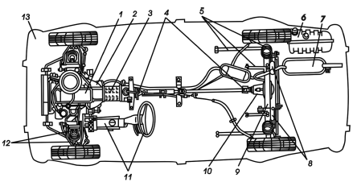
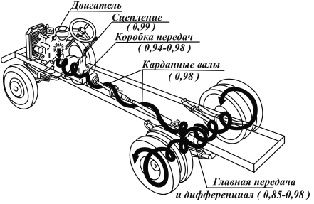
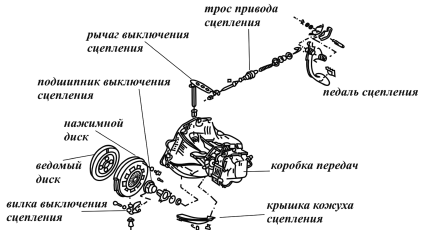

Общее устройство и классификация автомобилей.
В современном мире автомобиль является самым распространенным техническим средством. Попытки создать самодвижущуюся тележку предпринимались с XVIII века. В России над проектом такой повозки работал изобретатель И.П. Кулибин. В 1770 году французский изобретатель Н. – Ж. Кюньо построил паровой трехколесный тягач, который явился предшественником не только автомобиля, но и паровоза. Однако паровые повозки были тяжелыми, неудобными для пользования на обычных дорогах и распространения не получили.
Широкие возможности для развития автомобиля открыло появление двигателя внутреннего сгорания, легкого, компактного и сравнительно мощного. И в 1885 году немецкий изобретатель Г. Даймлер создал первый мотоцикл с бензиновым двигателем, а в 1886 году К. Бенц, тоже немец, запатентовал трехколесный автомобиль. Вскоре началось промышленное производство автомобилей в Европе, а затем в 1892 году американский изобретатель и бизнесмен Г. Форд построил автомобиль конвейерной сборки.
В России автомобили начали собирать в 1890 году из импортных деталей на заводах «Фрезе». В 1908 году началась сборка автомобилей «Руссо-Балт» на Русско-Балтийском вагонном заводе в Риге сначала из импортных деталей, а затем из деталей отечественного производства. Однако началом отечественного автомобилестроения считается 1924 год, когда на заводе АМО (ныне ЗИЛ – Московский завод имени Лихачева) были изготовлены первые отечественные грузовые 1,5-тонные автомобили АМО-Ф с двигателем мощностью 30 л.с. В 1927 году появился автомобиль НАМИ-1 с двигателем мощностью 18,5 л.с., а в 1932 году был построен Горьковский автомобильный завод. Большим прорывом в производстве российских легковых автомобилей явился ввод в строй Волжского автомобильного завода (ВАЗ, 1970 год) и Камского автомобильного завода (КамАЗ, 1976 год) по производству грузовых автомобилей.
В настоящее время происходит интенсивное совершенствование конструкций транспортных средств, повышение их надежности и производительности, снижение эксплуатационных затрат, повышение всех видов безопасности, осуществляется более частое обновление выпускаемых моделей, придание им высоких потребительских качеств, отвечающих современным требованиям.
Все это вызывает необходимость повышения уровня подготовки водителей. В первую очередь начинающему водителю обязательно нужны основы знаний устройства автомобиля, которые являются основным условием для безопасного и правильного управления автомобилем, для его технического обслуживания и ремонта.
Автомобиль является самоходной машиной, которая приводится в движение установленным на нем двигателем. Состоит автомобиль из отдельных деталей, узлов, механизмов, агрегатов и систем. Деталь является частью автомобиля, состоит из целого куска материала. Узел представляет собой соединение нескольких деталей. Механизм– это устройство, предназначенное для преобразования движения и скорости. Агрегат – соединение нескольких устройств в одно целое. Система характеризуется как совокупность отдельных частей, связанных общей функцией, например, системы питания, охлаждения и т. д.
Легковые автомобили состоят из агрегатов, механизмов и узлов, объединенных в три основные составные части: двигатель, шасси и кузов (рис. 1).

Рис. 1. Общая компоновка заднеприводного автомобиля ВАЗ 2105 с расположением двигателя спереди: 1 – двигатель; 2 – сцепление;3 – коробка передач; 4 – карданная передача; 5 – детали задней подвески;6 – топливный бак; 7 – глушитель; 8 – амортизаторы; 9 – задний мост; 10 – главная передача и дифференциал; 11 – рулевое управление;12 – детали передней подвески; 13 – кузов
Двигатель является источником механической энергии и представляет собой агрегат, который преобразует тепловую энергию, высвобождающуюся в результате сгорания топлива, в механическую работу, которая используется для движения автомобиля. В зависимости от того, каким способом идет образование топливовоздушной смеси и как быстро она воспламеняется, осуществляется и подбор двигателя – карбюраторный или дизельный. Поршневые двигатели внутреннего сгорания классифицируют по следующим признакам: по назначению – транспортные и стационарные; по способу осуществления рабочего цикла – четырехтактные и двухтактные; по способу смесеобразования – карбюраторные или газовые и с внутренним смесеобразованием – дизели; по способу воспламенения рабочей смеси – с принудительным воспламенением от электрической искры – карбюраторные, газовые и др., с воспламенением от сжатия (самовоспламенение) – дизели; по виду применяемого топлива – карбюраторные, работающие на бензине; дизели, работающие на тяжелом дизельном топливе, и двигатели, работающие на сжатом или сжиженном газе; по числу цилиндров – одноцилиндровые и многоцилиндровые (двух-, трех-, четырех-, шести-, восьмицилиндровые т. д.); по расположению цилиндров – однорядные с вертикальным расположением цилиндров в один ряд, однорядные с наклоном оси цилиндров от вертикали на 20°–40°; V-образные двухрядные с расположением цилиндров под углом и с противоположным горизонтальным расположением цилиндров (под углом 180°); по способу наполнения цилиндров свежим зарядом – двигатели без наддува, в которых наполнение осуществляется за счет разряжения, создаваемого в цилиндре, при движении поршня от верхней мертвой точки к нижней мертвой точке, и с наддувом – наполнение цилиндра свежим зарядом происходит под давлением, которое создается компрессором; по охлаждению – с жидкостным или воздушным охлаждением. Как правило, двигатель размещается спереди автомобиля, но бывает и сзади.
По рабочему объему цилиндров двигателя (литражу) легковые автомобили классифицируются следующим образом: особо малый класс – до 1,2 л; малый – свыше 1,2 до 1,8 л; средний – свыше 1,8 до 3,5; большой – свыше 3,5 л и высший класс не регламентируется. В соответствии с этой классификацией каждой новой модели присваивается в дополнение к буквенному сокращенному названию изготовителя четырехзначный цифровой индекс. Первые цифры указывают класс (11 – особо малый, 21 – малый, 31 – средний, 41 – большой), две последние – модель автомобиля, например ВАЗ-2105.
Шасси объединяет трансмиссию, ходовую часть и механизмы управления (рис. 2)
Трансмиссия передает крутящийся момент от коленчатого вала двигателя к ведущим колесам автомобиля и изменяет величину и направление этого момента. В трансмиссию входят следующие механизмы: сцепление, коробка передач, карданная передача, главная передача, дифференциал и полуоси. Последние три механизма составляют ведущий мост (как правило задний). Автомобиль повышенной проходимости имеет два ведущих моста, в трансмиссию его дополнительно устанавливают за коробкой передач раздаточную коробку, которая распределяет крутящий момент через карданные передачи между ведущими мостами.

Рис. 2. Схема усилия от двигателя к колесам автомобиля. Цифры в скобках означают коэффициенты полезного действия отдельных механизмов
Сцепление представляет собой механизм, передающий крутящий момент от двигателя на коробку передач и позволяющий кратковременно отсоединять от двигателя другие агрегаты трансмиссии и вновь плавно их соединять. Наибольшее применение получило однодисковое фрикционное сцепление, состоящее из механизма и привода включения, первый из которых монтируется на маховике двигателя, а второй – на вращательных деталях. Основными деталями сцепления являются ведомый диск и нажимной диск с пружинами. Первый связан с ведущим валом, а второй – с коробкой передач. В состоянии покоя оба диска соединены между собой пружиной, которая при нажатии педали сцепления отходит, разделяя диски, что позволяет выбрать нужную передачу (рис. 3).

Рис. 3. Система сцепления в «Опеле Вектра»
Коробка передач необходима для преобразования крутящего момента по величине и направлению. Она обеспечивает длительную работу двигателя на холостом ходу и позволяет автомобилю двигаться в широком диапазоне скоростей. На легковых автомобилях устанавливают одну вперед и одну назад четырехступенчатые, а иногда и пятиступенчатые коробки передач. При включенном сцеплении двигатель начинает вращать ось сцепления, которая в свою очередь вращает ось трансмиссии. Скорость вращения этой оси зависит от выбранной передачи. Каждой из передач соответствует своя шестеренка. Если муфты синхронизаторов не зацеплены с шестеренками, а шестерня заднего хода сдвинута назад, коробка передач находится в нейтральном положении. Главная передача способствует увеличению крутящего момента и изменяет его направление под прямым углом к продольной оси автомобиля, передавая на дифференциал и обеспечивая плавность и бесшумность в работе. В свою очередь дифференциал передает крутящий момент от главной передачи к полуосям и позволяет им вращаться с разной скоростью при повороте автомобиля.
Ходовая часть связывает колеса с кузовом, воспринимает силы, действующие на автомобиль, снижает динамические нагрузки от колес, гасит колебания кузова и состоит из рамы, на которой установлены кузов и все механизмы автомобиля, подвески (рессоры и амортизаторы), передних и задних мостов и колес. Крутящий момент, подводимый от двигателя через трансмиссию к ведущим колесам, вызывает противодействие дороги, которое выражается силой реакции, приложенной к ведущим колесам и направленной в сторону движения автомобиля. Силы реакции передаются на ведущий мост, а от него через рессоры на раму автомобиля и толкают ее вперед. Рама в свою очередь передает эти силы через передние рессоры на передний мост и к передним колесам, вызывая поступательное движение автомобиля.
В дороге за плавность хода автомобиля отвечает подвеска. Пружины, расположенные между осями колес и кузовом, смягчают толчки и делают колебания корпуса не столь ощутимыми. Однако одних пружин для этого недостаточно. Поэтому подвеска представляет собой механизм, оснащенный амортизаторами, прокладками и рычагами. Задняя подвеска по своей конструкции отличается от передней, но выполняет практически те же функции.
Непосредственную связь автомобиля с дорогой, обеспечение движения и изменение его направления осуществляют колеса. В зависимости от назначения они делятся на ведущие, управляемые и комбинированные. Ведущие колеса преобразуют крутящий момент от трансмиссии в силу тяги, в результате чего возникает поступательное движение автомобиля. Управляемые колеса задают направление движения. Колесо крутится по ступице, которую устанавливают на подшипниках на оси. Основными частями колеса являются диск, который штампуют из листовой стали по специальному профилю, и пневматическая шина. Диск имеет обод, изготовленный из стали. В средней его части есть углубление, что обеспечивает и облегчает шиномонтаж.
Наиболее важной частью колеса является пневматическая шина. Она смягчает толчки и удары при движении по дороге, за счет сжатого воздуха, который ее заполняет, и материалов, из которых изготовлена сама шина. Совершенствование ее в настоящее время идет в направлении снижения давления в ней и увеличения площади поперечного сечения. Появились бескамерные шины, которые легче обычных и в случае прокола не теряют давление так быстро, как камерные. Диагональные нити корда заменили радиальными, что придало шинам большую эластичность боковин, а протектор снабдили жестким поясом (опоясанная шина), что уменьшило сопротивление качению и увеличило пробег протекторов. Обод колеса постепенно становится шире, увеличивая опору для сохранения эластичности, в результате плавность хода повышается без ухудшения устойчивости. Впрочем, решающее значение для работы шины имеет сечение профиля, а не диаметр обода колеса.
В конце краткого разговора об общем устройстве автомобиля можно совершенно определенно сказать, что все детали и системы современных легковых автомобилей одинаково важны и необходимы. А точность и надежность их работы во многом будет зависеть от их владельцев, следящих за уходом и техническим обслуживанием машины.